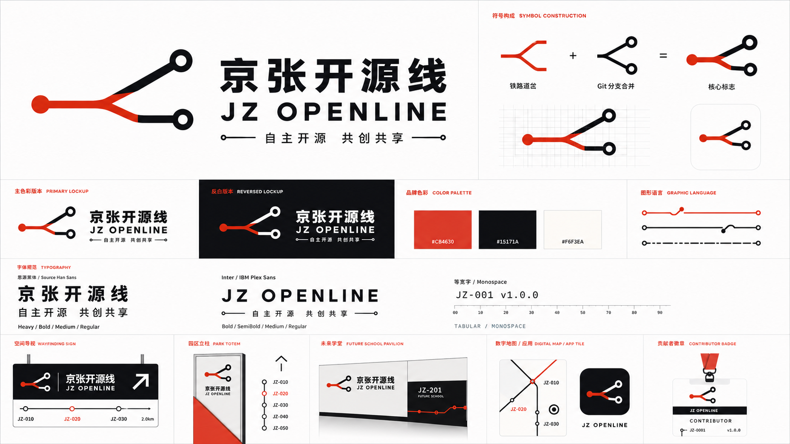
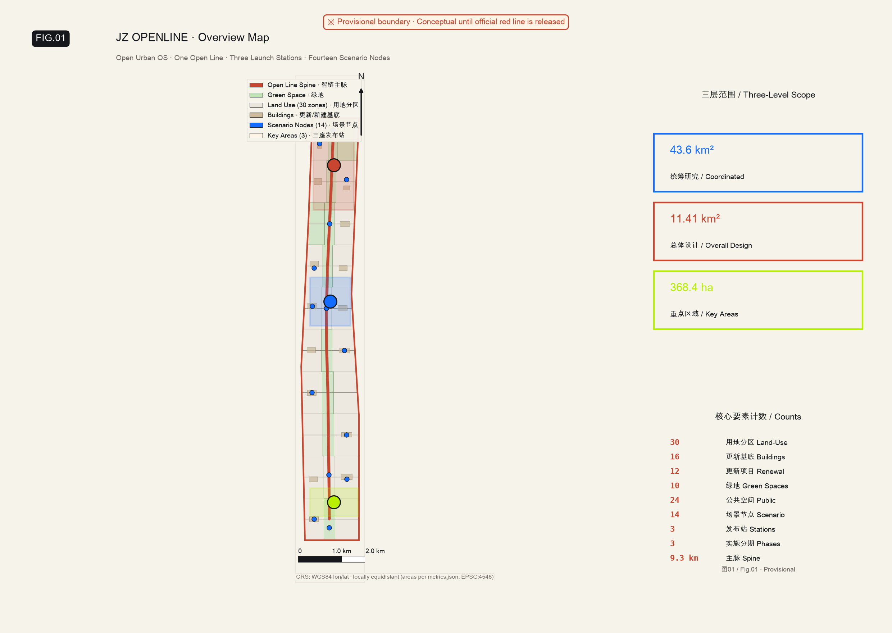
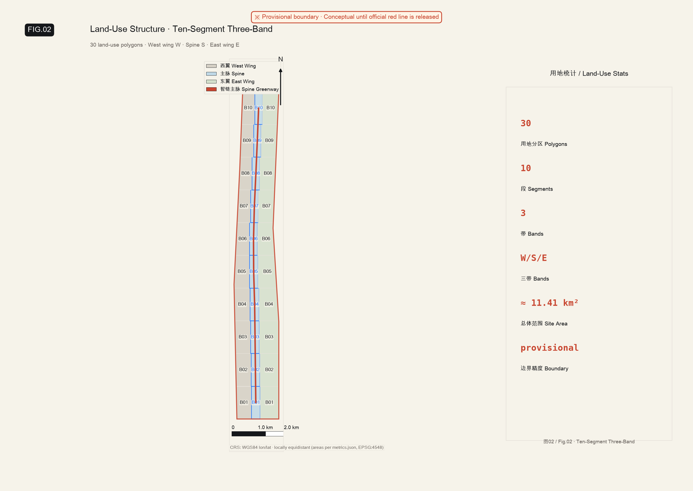
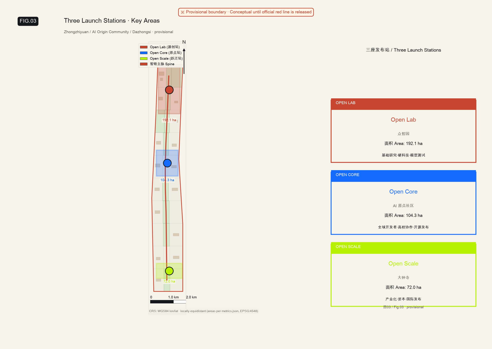
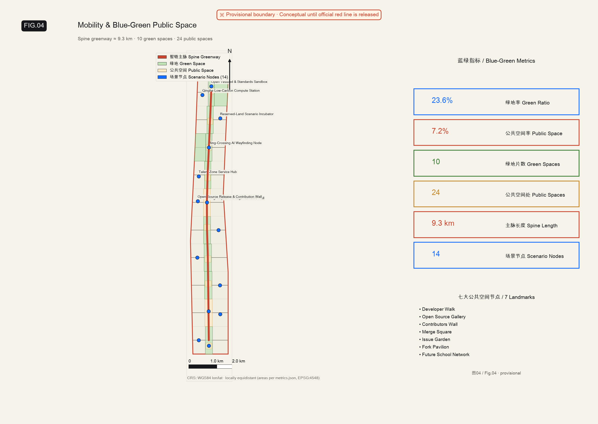
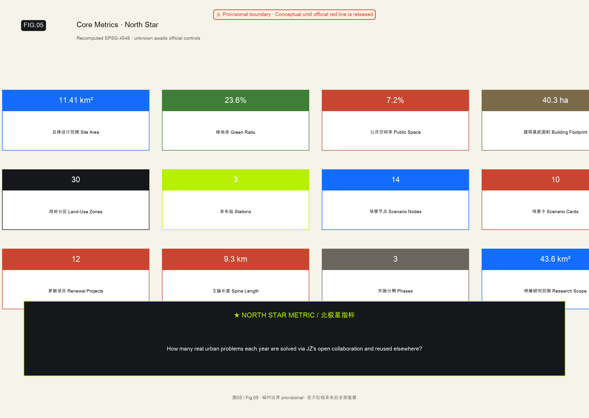

Open Urban OS · WorkBuddy Urban Design Agent · Provisional constraint · EPSG:4548

Master concept: Open Urban OS — upgrading the Jingzhang Railway Heritage Park from an AI exhibition space into an urban operating system that organizes innovation, industry, and daily life through open-source methods.
Public brand: JZ OPENLINE — Build with Autonomy. Create in the Open. Share with the World.
Spatial structure: "One open line + three launch stations + multiple urban repos + Future School network"
| Level | Area | Role |
|---|---|---|
| Coordinated research | 43.6 km² | Five-layer Open Urban Stack: Open Science → Open Infra → Open Venture → Open Street → Open Community |
| Overall design area | 11.41 km² | One open line + three stations + 30 land-use zones + 16 building footprints + 12 roads + 10 green spaces + 24 public spaces |
| Key areas | 368.4 ha | Three launch stations: Open Lab / Open Core / Open Scale |

Coordinated research determines industry logic (five-layer stack), overall design maps to renewal projects and spatial structure (ten-segment three-band), key areas verify implementation feasibility of three launch stations. Not separate drawing sets but progressively deepening design logic.
Turning Haidian's existing AI innovation assets into the first operating modules of the Open Urban OS.
| Role | Existing Programme | Function in JZ OPENLINE |
|---|---|---|
| Problem Engine | AI & Aging-Friendly Challenge | Surfaces real problems from hospitals and communities; residents, students and developers co-propose and validate solutions |
| Learning Engine | OpenSchool + Community Classrooms | Links open courses, project-based learning and real community issues — the whole belt becomes an open campus |
| Organizing Engine | Lead Learner Programme | Sustains learning, challenges and collaboration at each node, converting footfall into a stable community |
| Industry Engine | AI Commander | Connects AI literacy, scenario discovery, capability building and incubation for enterprises and parks |
| Spatial Interface | Future School | Physical nodes in parks and streets linking OpenSchool, open-source communities and global networks |
The open-source loop: hospitals/schools/enterprises/communities publish problems → Future School aggregates → OpenSchool organizes learning → Lead Learners mobilize local collaboration → challenges produce solutions → AI Commander drives deployment → OpenLine Repo connects globally → outcomes return to the source.

192.1 ha · Garden-style full-stack autonomous innovation district
Core roles: Open experiment street, model arena, shared maker workshops. Spatial action: Qinghe waterfront as low-carbon innovation living room; inner-ring slow mobility connects to spine. AI scenarios: standards governance sandbox, low-carbon compute post.
104.3 ha · Core community for global developer & university collaboration
Core roles: Open-source lounge, Maintainer House, Merge Square. Spatial action: Qinghuayuan Station heritage plaza stitches campus–park–district. AI scenarios: open-source release hall, outcome incubation hall.
72.0 ha · Industrialization, capital, international launch hub
Core roles: AI Launch Center, Capital Lounge, Global Roadshow Stage. Spatial action: Dazhongsi Station gateway plaza + four-quadrant pedestrian connectivity. AI scenarios: international roadshow salon, data-element salon, JZ Open Week node.
Land-use zones: 30 LU polygons using ten-segment three-band (B01–B10 × W/S/E) division, fully covering design area with residual 11.7 m² < tolerance.
Building footprints: 16 BLDG renewal footprints, total area 40.3 ha representing 3.5% of design area. Strategy prioritizes renovation over demolition.

ROAD-SPINE Open-line spine: ~9.3 km continuous walking+cycling greenway linking all three launch stations and Future School nodes.
Four discontinuity strategies: North 5th Ring footbridge, Qinghuayuan Station plaza combo, Dazhongsi four-quadrant setback, Wudaokou small-scale street prototype.
Green ratio: 23.6% (10 GREEN divisions along spine)
Public space ratio: 7.2% (24 spaces: 2 civic squares + 8 plazas + 14 scenario/Future-School nodes)
Seven landmarks: Developer Walk → Open Source Gallery → Contributors Wall → Merge Square → Issue Garden → Fork Pavilion Network → Future School Network
16 renewal building footprints with renewal_action field (retain/renovate/new-build). Height and volume controls are advisory pending heritage + regulatory confirmation.
12 renewal projects (JZ-001 to JZ-012): Developer Walk, Merge Square, Issue Garden, Fork Pavilion, Future School nodes, Qinghe Low-Carbon Corridor, Open Lab experiment street, Open Scale roadshow salon, Agent Storefront, OpenLine Repo, JZ Open Week.
| Phase | Timeline | Focus |
|---|---|---|
| Near-term | 0–6 mo | Protocol & prototype: brand concept, first Issue list, Future School prototype, first Developer Walk section, temporary Merge Square |
| Mid-term | 6–18 mo | Visible network: three stations connected, Maintainer Residency, open-source accelerator, contributor honor system |
| Long-term | 18–36 mo | Global network effect: other cities reuse JZ modules, global partner nodes, JZ Open Week as annual destination |
14 mapped scenario nodes (SCENARIO_NODE), covering 3 track scenarios:
ai-traffic-walkability enterprise-service-copilot public-safety-operations-review
Four Future School types: Future Health School (aging-friendly, clinician co-creation), Future Open School (OpenSchool, community learning), Future Industry School (AI Commander, enterprise diagnosis), Future Open-Source School (maintainer events, global connections).
| No. | Name | Spatial Carrier | Description |
|---|---|---|---|
| 01 | Open-Source Release Hall | Open Core | Release and micro-roadshows by universities, open-source communities and startups |
| 02 | Safety Governance Sandbox | Open Lab | Standards drafting, safety evaluation and red-teaming rendered as a visitable node |
| 03 | Edge Compute Post | Belt-wide nodes | New infrastructure prototype combining public services and low-carbon energy |
| 04 | AI Slow-Mobility Navigation | JZ Heritage Park | Explainable wayfinding + low-intrusion sensing to detect gaps and demand |
| 05 | International Roadshow Salon | Open Scale | Showcase and negotiation for intelligent-terminal and content enterprises |
| 06 | Qinghe Low-Carbon Corridor | Open Lab riverfront | Green space + stormwater + walking/cycling + AI demonstration |
| 07 | Near-Campus Conversion Street | Open Core | Incubation, exhibition, legal, IP and investment services |
| 08 | Data Element Salon | Open Scale | Data-element circulation interface under compliant authorization and audit |
| 09 | AI Living Prototype Street | Community-retail junction | Operating district for healthcare/education/legal/daily-life AI+ scenarios |
| 10 | Global JZ Open Week Route | Belt-wide public space | Heritage → open-source community → industry showcase → international roadshow |
| Persona | Typical Needs | Spatial Response | Privacy Boundary |
|---|---|---|---|
| Open-source developer | Release, collaborate, test, community reputation | Open Core lounge, night collaboration space | No individual trajectory collection; event data aggregated only |
| Startup team | Low-cost workspace, compute access, product testbed | Open Lab shared workshop, edge compute service point | Compute and data services require separate authorization |
| Corporate visitor | Showcase, business, international reception | Open Scale capital lounge, transit interchange | Corporate marks require rights clearance |
| Local resident | Commuting, leisure, community services | Open-line slow-mobility loop, embedded Future Schools | Not used for commercial recommendation |
| University staff & students | Tech transfer, cross-campus collaboration | Campus–park mobility stitching, conversion posts | Campus data and research outputs require authorization |
All AI scenarios follow data-minimization and human-review principles; every pilot publishes accountable party, trial period and opt-out.
Not three period galleries, but five actions —
1 BUILD: the Jingzhang Railway and Zhan Tianyou's engineering culture — how autonomous building capability was won.
2 CONNECT: how the railway reshaped the flows of city, industry and people.
3 COMPUTE: Zhongguancun from research institutes and Electronics Street to the digital industry.
4 CONTRIBUTE: how open source changed knowledge production, enterprise innovation and public participation.
5 RELEASE: AI scenarios running in the streets, and a global release platform.
The route does not end at a "future museum" but at Merge Square, where releases and public debate are actually happening. Visitors must do one last thing — file an issue, test a project, contribute documentation or join an event — turning from tourist into contributor.

North Star Metric: How many real urban problems are solved each year through JZ's open collaboration and reused by other regions?
Announcement 1.3 / 1.4 / 1.5 and agent.1–agent.6 fully mapped to sections, layers, metrics, drawings, HTML, sources, assumptions, and self-check items. See compliance_matrix.json.
| Review | Status | Note |
|---|---|---|
| deterministic validation | PASS | Manifest / matrices / sections / bilingual companions all validated |
| spatial_review | PASS | Only notice: 3 KEY_AREA entries provisional (declared as assumptions) |
| visual_review | PASS | This page |
| professional_review | PASS | Evidence chain complete |
| Overall | PASS | Can enter formal review: YES |
Command: scripts/self_check_submission.py --pr-author flyingpig707 submissions/flyingpig707/jz-openline-jingzhang-belt
OFFICIAL-ANNOUNCEMENT · AGENT-TASKBOOK · SOURCE-REGISTRY · PROCESSED-FACT-PACK · BOUNDARY-SOURCE · KEY-AREA-SOURCE · SITE-PACKAGE · JINGZHANG-HERITAGE-CONTEXT · STANDARD-* — 11 sources total. See sources.json.
| ID | Content |
|---|---|
| A-BOUNDARY-002 | site_boundary is provisional_constraint, not official redline |
| A-KEYAREA-003 | key_areas are provisional_constraint, areas from announcement |
| A-LANDUSE-004 | FAR/height/density/setbacks unknown; no fabricated values |
| A-HERITAGE-005 | Jingzhang heritage protection zone pending official confirmation |
| A-WATER-006 | Qinghe blue-line pending official confirmation |
| A-RAIL-007 | Rail station interface conditions pending |
| A-SCENARIO-008 | Scenario operating entities & data governance to be established |